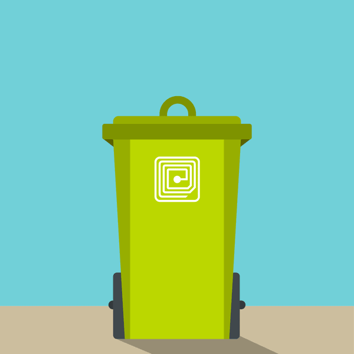

Novedades
"Smart Waste Management" (Gestión Inteligente de Residuos): Este servicio utiliza tecnología avanzada para
monitorear y controlar la cantidad y el tipo de residuos que se generan en un edificio. El servicio incluye la
instalación de sensores en contenedores de basura, que pueden detectar cuándo están llenos y necesitan ser
vaciados. La información recopilada se transmite a un sistema centralizado que permite a los gestores de
edificios planificar y optimizar la recolección de residuos, reduciendo los costos y mejorando la eficiencia..
